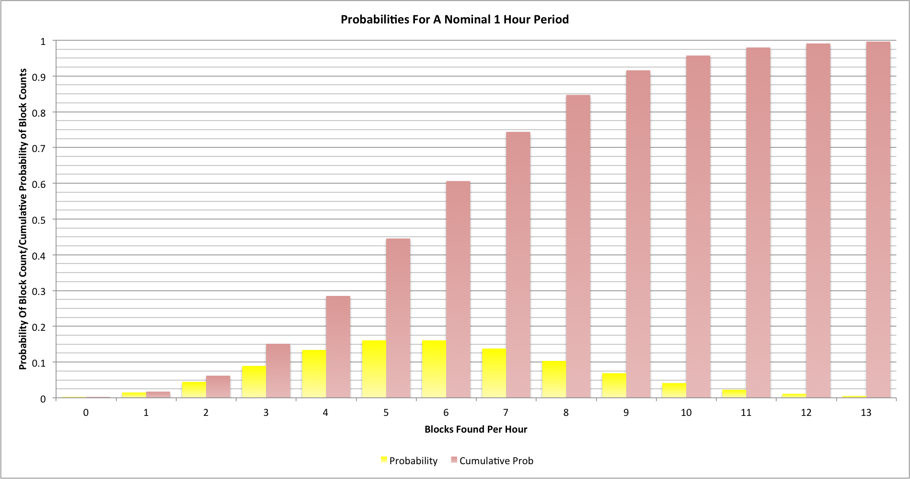
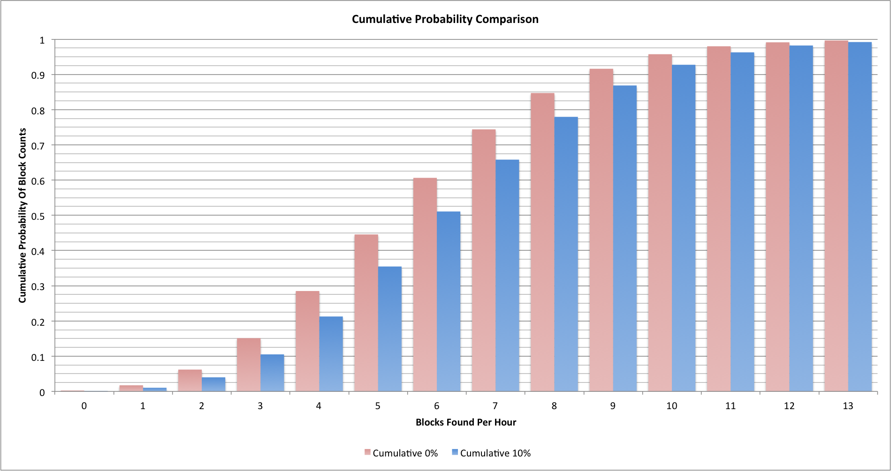
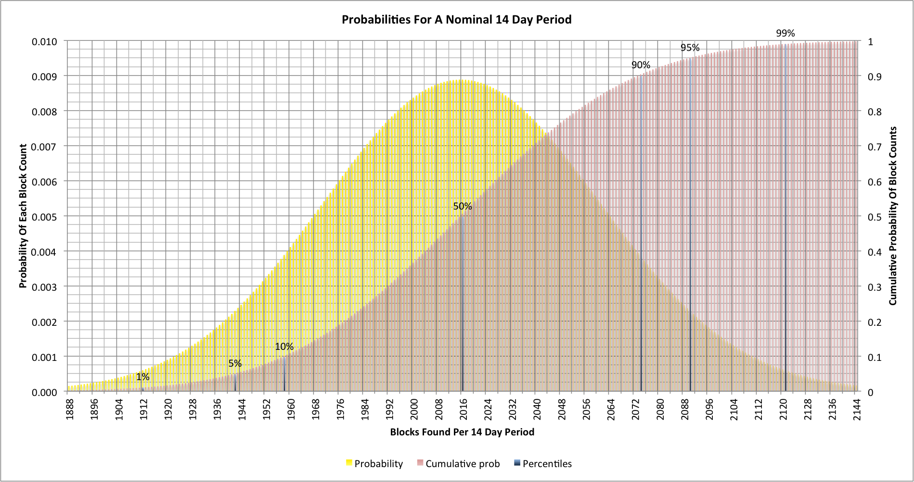

Dave Hudsonhashingit.com |
One of the more infuriating challenges when trying to do any sort of analysis of Bitcoin mining is to understand the current world-wide hashing rate and how this affects difficulty changes. The very best “live update” websites seem to show the hash rate being all over the place. Large spikes occur frequently and it appears that huge amounts of hashing capacity have either come online or gone offline. This explanation may appeal to conspiracy theorists, and will sometimes be the real cause, but there is a much more mundane reason most of the time (but nonetheless surprising).
The first thing to look at is the way mining operates. The use of the SHA256 hash is intended to make it effectively impossible to predict what will or won’t give a particular hash result without actually computing the hash and seeing if it solved a block. Essentially each minor change in the an attempt to solve a block gives a totally random effect, so trying one hash means that the next attempt is neither no more likely, or no less likely, to succeed! This highly random nature means that mining is a Poisson Process. As each attempt to solve a block is unpredictable then in theory everyone might mine all day and never solve a block. Similarly it’s also possible that a single miner might find 6 blocks in a succession. Both outcomes are possible, but both are staggeringly unlikely!
Poisson Processes have some very well understood characteristics. We can prediction how many events (finding blocks in our case) will occur in a particular period of time when we know what the average number of events will be.
For Bitcoin mining where the difficulty isn’t changing (the hash rates are constant) then we should see an average of 6 blocks per hour, 144 per day, or 2016 per 2 weeks.
Here’s what the probabilities look like for a single hour:

The chart shows the probability (between 0 and 1) for each block count in yellow and the cumulative probability in red. Even though we might expect 6 blocks every hour we will actually see 2 or fewer blocks around once every 16 hours; we’ll also see 10 or more blocks once every 24 hours too. It may seem surprising but once every 2.8 days we’ll find an hour between consecutive blocks [2015-02-05: This originally stated 16.8 days and not 2.8 days, but I had mistakenly multiplied by 6].
When difficulty levels are increasing we see a change in the probabilities. Let’s look at our original cumulative probability chart and add in a chart for where the average block finding rate is 10% higher (we’re seeing 6.6 blocks per hour):

Our original statistics are in red and the new ones are in blue. It’s now more likely that we’ll see a slightly higher block finding rate, but we still see much lower and much higher numbers occurring quite frequently!
Hash rate calculators have a huge problem as a result of the randomness shown by the statistics. All they can do is measure the event rate and make an estimate of the rate, based on the block finding rates. They have no way of telling if the statistics for any given period of time were normal, low, high, very low, very high, etc.
Difficulty changes occur every 2016 blocks. They play a very interesting role in hash rate statistics because they’re computed by taking the time it took to find the previous set of blocks and to set the difficulty to a level where they would have taken 14 days to find.
Let’s look at the probabilities for a 14 day period:

The scale here is different to our original graphs, and we’re only looking at the numbers closer to the nominal 2016 blocks that should be found in 14 days. There are some interesting markers shown.
As we might expect, the most likely outcome is that we will see 2016 blocks found, but 10% of the time we’ll see fewer than 1958. Similarly 10% of the time we’ll see more than 2073. Of course the difficulty will be reset after 2016 anyway but in that case it would be set about 2.8% higher than it should be. If we think about those two 10% numbers this means that every 5 blocks we will see a difficulty level that is either 2.8% higher or lower than it should be. In the next difficulty change period we will probably see that counteracted, but there’s no actual guarantee since we may see two consecutive high estimates.
We can also look at the 1% and 99% markers. They represent things that between them will happen about once every 2 years. Approximately once every 2 years the hash rate estimates at the difficulty change will be out by more than 5% and so the difficulty will be set incorrectly by as much as 5%!
What’s really important here is that even if the worldwide hash rate was constant we’d still appear to see significant difficulty changes occurring every 2016 blocks!
As for hash rate estimation, doesn’t it now look much more complex than it seemed it would?
This article was written with the help of data from a C language application that generates the probability distributions. The data was rendered into charts using Excel. The source code can be found on github: https://github.com/dave-hudson/hash-rate-headaches